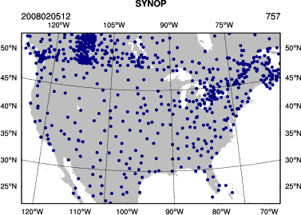

|
Observation Preprocessing
The goal of this session is to generate the observation input (i.e. the y0 shown in the WRFDA flowchart) for running WRFDA.
Reference: Download the tutorial presentation
Source code
Copy the pre-compiled code to your main working directory (/kumquat/users/${USER}/DA), if you have not done so.
WRFDA/var/obsproc/obsproc.exe is the executable that will be used in this session.
Create your working directory
We recommend running each session in a separate directory, so that it will be easier to check for the necessary input files and look for what output files are created after a successful run.
For this exercise you should create /kumquat/users/${USER}/DA/obsproc and use this as your working directory for this session.
mkdir /kumquat/users/${USER}/DA/obsproc
cd /kumquat/users/${USER}/DA/obsproc
Input data
- observations in little_r format
The first step of observation preprocessing is to prepare observations in little_r format.
For this tutorial, an observation file in little_r format is provided.
cp /kumquat/wrfhelp/DATA/WRFDA/CONUS60/ob/2008020512/obs.2008020512 .
obs.2008020512 is the observation file for this exercise in little_r format. It is a text file; you can use emacs, vi, or another text editor to see its contents. For your own applications, you will have to prepare your own observation file.
- observation error table
The observation error file (obserr.txt) is provided with the WRFDA package under the var/obsproc directory.
Make sure it is present in your obsproc working directory.
ln -fs /kumquat/users/${USER}/DA/WRFDA/var/obsproc/obserr.txt ./obserr.txt
- namelist.obsproc
For your reference, an example namelist (namelist.obsproc.3dvar.wrfvar-tut) has been included in the WRFDA package under var/obsproc directory.
Copy and rename the namelist to "namelist.obsproc" under your working directory.
cp /kumquat/users/${USER}/DA/WRFDA/var/obsproc/namelist.obsproc.3dvar.wrfvar-tut ./namelist.obsproc
namelist.obsproc contains options to configure the little_r observation file location, domain, time window, etc.
For this tutorial case, you shouldn't need to change any settings in the namelist, but you should check the important settings to gain familiarity with the setup of OBSPROC. &record1 specifies information about your input file names, &record2 specifies date/time information, and &record7 and &record8 specify information about your domain.
> vi namelist.obsproc
&record1
obs_gts_filename = 'obs.2008020512',
obs_err_filename = 'obserr.txt',
/
&record2
time_window_min = '2008-02-05_11:00:00',
time_analysis = '2008-02-05_12:00:00',
time_window_max = '2008-02-05_13:00:00',
/
...
&record7
IPROJ = 1,
PHIC = 40.00001,
XLONC = -95.0,
TRUELAT1= 30.0,
TRUELAT2= 60.0,
MOAD_CEN_LAT = 40.00001,
STANDARD_LON = -95.00,
/
&record8
IDD = 1,
MAXNES = 1,
NESTIX = 60, 200, 136, 181, 211,
NESTJX = 90, 200, 181, 196, 211,
DIS = 60, 10., 3.3, 1.1, 1.1,
NUMC = 1, 1, 2, 3, 4,
NESTI = 1, 40, 28, 35, 45,
NESTJ = 1, 60, 25, 65, 55,
/
...
Alternatively, rather than copying the observation file to your working directory, you can set obs_gts_filename to the full path of the file's location.
Run obsproc (obsproc.exe)
It is convenient to link the executable to your current working directory.
ln -sf /kumquat/users/${USER}/DA/WRFDA/var/obsproc/obsproc.exe .
./obsproc.exe
On the classroom computers, running this exercise should take about a minute.
Check output
A successful run of obsproc should result in lines similar to these near the end of the output on screen:
Write 3DVAR GTS observations in file obs_gts_2008-02-05_12:00:00.3DVAR (WRFDA V3.7 )
Wrote 30892 lines of data in file: obs_gts_2008-02-05_12:00:00.3DVAR
No SSMI observations available.
NOTE: If you see a message stating "The following floating-point exceptions are signalling" or similar, this is normal and can be safely ignored. |
Look for obs_gts_2008-02-05_12:00:00.3DVAR in your working directory. That is the main output from obsproc. You can open it using a text editor to check its content; it should look similar to this.
*.diag are diagnostic files. The writing of these files are controlled by the namelist settings under &record5.
HEIGHT.txt, PRES.txt, RH.txt, SPD.txt, TEMP.txt, and UV.txt are observation errors in plain-text format for easy reference. Most names are self-explanatory. However, since some wind observations are of wind speed/direction while others are of the wind's U- and V-components, there are multiple files for wind errors. DIR.txt and SPD.txt are used for wind direction and speed errors respectively, while UV.txt is for U- and V-wind component errors.
Graphics
You can use an NCL script, provided at /kumquat/wrfhelp/DATA/WRFDA/TOOLS/graphics/ncl/plot_ob_ascii_loc.ncl, to see the locations of observations contained in obs_gts_2008-02-05_12:00:00.3DVAR
cp /kumquat/wrfhelp/DATA/WRFDA/TOOLS/graphics/ncl/plot_ob_ascii_loc.ncl .
Edit plot_ob_ascii_loc.ncl to provide the date, filenames and options of your case.
......
date = "2008020512"
obfile = "obs_gts_2008-02-05_12:00:00.3DVAR"
fgfile = "/kumquat/wrfhelp/DATA/WRFDA/CONUS60/rc/2008020512/wrfinput_d01" ; for retrieving mapping info
out_type = "pdf"
plotname = "./obsloc"+date
......
Run the NCL script
ncl plot_ob_ascii_loc.ncl
View the plot using display. Use spacebar to scroll through the plots of different observation types.
display obsloc2008020512.pdf
|
 |
If you were successful, then congratulations, you are done with the basic OBSPROC exercise! You can now move on to the next exercise for this practice session.
You can return here later for additional practice on observation preprocessing below:
Additional practice
Reference the tutorial presentation and the User's Guide for instructions on the exercises below:
- Try preparing observation data for FGAT.
- Try preparing observation data for 4D-VAR.
- Set up any other domain of your interest, or some domains you have used for WRF practice. Use the command "ncdump -h" on any WRF file to find out the appropriate domain settings.
Take a look at WRFDA/var/obsproc/README.namelist to get some ideas on the options available for setting up your own domain.
|

{kind=link}